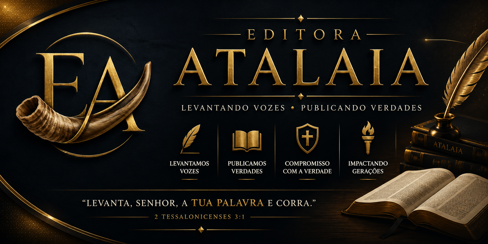
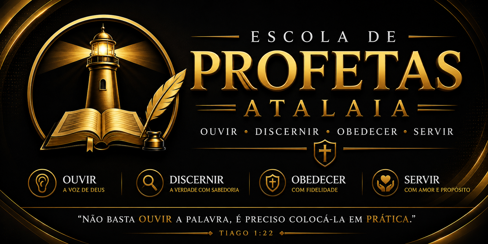
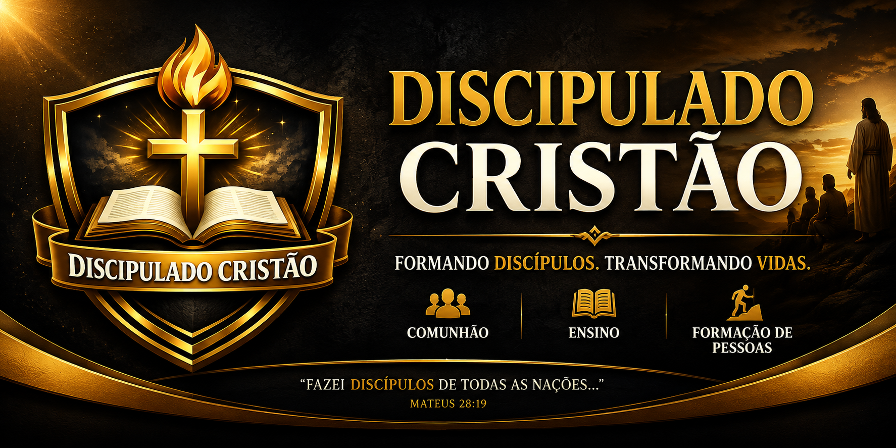

📚 Escola Bíblica Atalaia
Cursos bíblicos gratuitos, discipulado, teologia, hebraico, escatologia e formação cristã.
AcessarEzequiel 33:7
O Ministério Atalaia nasceu com a missão de proclamar o Evangelho de Jesus Cristo, ensinar as Sagradas Escrituras e preparar discípulos comprometidos com a Palavra de Deus.
Inspirado em Ezequiel 33, entendemos que Deus levanta atalaias para anunciar a verdade, advertir, consolar e conduzir vidas ao arrependimento e à salvação em Cristo.
Proclamar fielmente o Evangelho, formando discípulos e fortalecendo a Igreja de Cristo.
Alcançar vidas por meio do ensino bíblico, evangelização, literatura cristã e comunicação digital.
Bíblia Sagrada, Santidade, Amor, Integridade, Serviço e Dependência do Espírito Santo.

Servo do Senhor Jesus Cristo, dedicado ao ensino da Palavra de Deus, à evangelização e ao discipulado cristão.
Atua no desenvolvimento de projetos missionários, educacionais e de comunicação cristã, buscando utilizar a tecnologia como instrumento para proclamar o Reino de Deus.
Ver CredenciaisCremos que a Bíblia Sagrada é a Palavra inspirada de Deus, única regra infalível de fé e prática para a Igreja.
Cremos em um único Deus eterno, revelado como Pai, Filho e Espírito Santo.
Cremos que Jesus Cristo é o Filho de Deus, Salvador do mundo, que morreu pelos nossos pecados, ressuscitou ao terceiro dia e voltará em glória.
Cremos na atuação do Espírito Santo, que convence do pecado, santifica, capacita e distribui dons à Igreja.
A salvação é pela graça, mediante a fé em Jesus Cristo, e não pelas obras humanas.
A Igreja é o Corpo de Cristo, chamada para anunciar o Evangelho até a volta do Senhor.

Reconhecimento ministerial para o exercício do ministério de Evangelista.

Formação Teológica.
Cursos bíblicos gratuitos, discipulado, teologia, hebraico, escatologia e formação cristã.
Acessar
Mensagens, estudos, louvores, orações e programação cristã durante 24 horas.
Ouvir
Livros, e-books, estudos bíblicos e materiais para edificação da Igreja.
Conhecer
Livros, e-books, estudos bíblicos e materiais para edificação da Igreja.
Conhecer
Livros, e-books, estudos bíblicos e materiais para edificação da Igreja.
Conhecer
Livros, e-books, estudos bíblicos e materiais para edificação da Igreja.
Conhecer